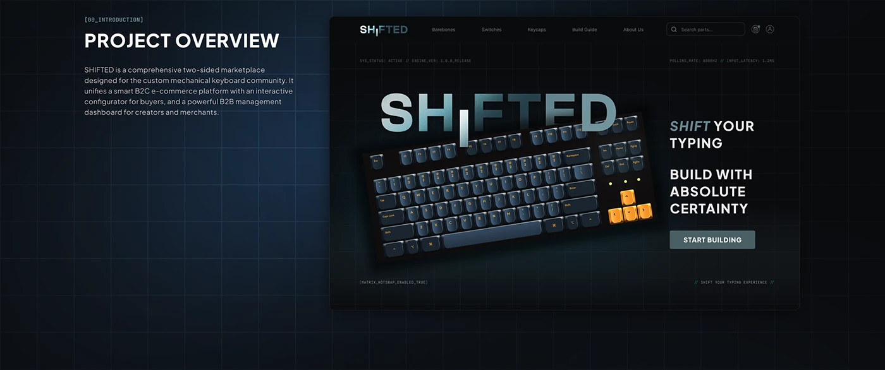
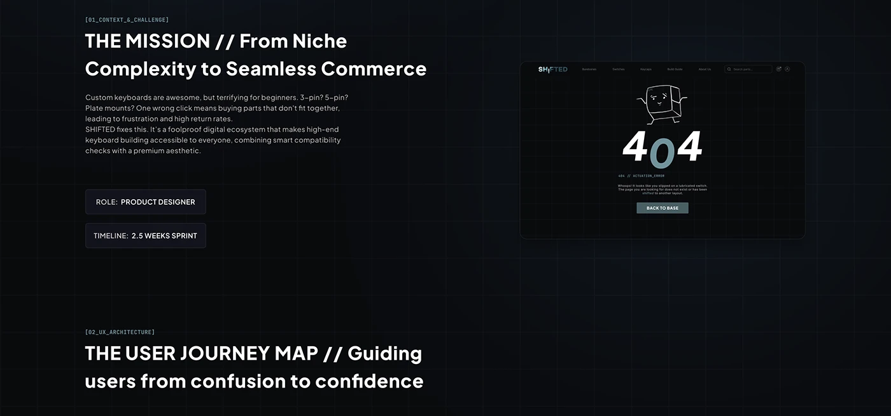

SHIFTED — это концепт e-commerce marketplace для людей, которые собирают механические клавиатуры не потому, что «нужна клавиатура», а потому что у каждой детали есть характер.
Сложная конфигурация без ощущения сложности
Главный вызов проекта — дать пользователю свободу кастомизации, но не заставить его держать в голове совместимость корпусов, switches, keycaps и других компонентов. Я придумала структуру, исследовала пользовательский сценарий и спроектировала восемь экранов.


Визуальный язык
В основе — тёмный интерфейс, крупные продуктовые изображения и ощущение маленькой технологичной мастерской. E-commerce здесь должен был быть не каталогом с бесконечными фильтрами, а местом, где хочется собирать вещь под себя.